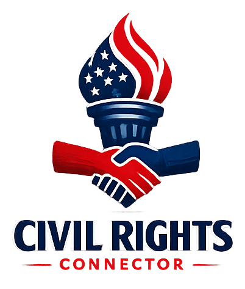

Find organizations that can actually help with what you're dealing with — matched by situation, not a wall of logos.
Pick the situation closest to yours.
This changes which kind of help gets shown first.
If we have state-specific resources for your situation, they'll show alongside the national ones.
These two topics get their own dedicated pages, since they don't fit a single urgency-driven situation.
Writing your situation out from scratch is the hardest part. Answer a couple questions and get a clean summary to paste into an intake form or email.
Every submission is reviewed by AricCivicLabs before anything is added — nothing publishes automatically.